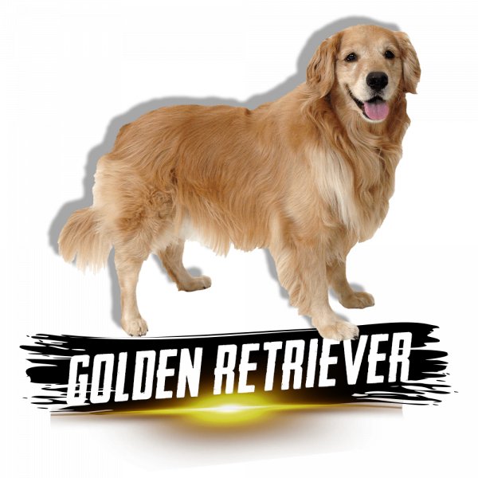
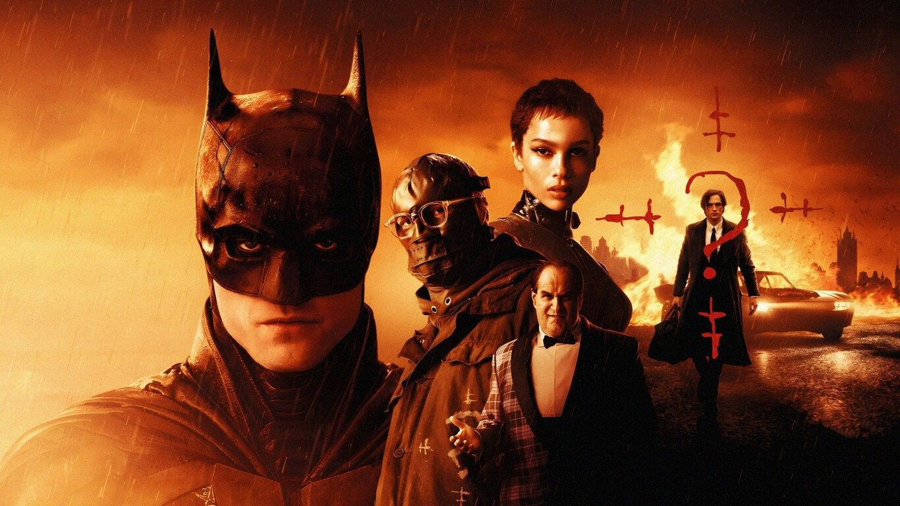
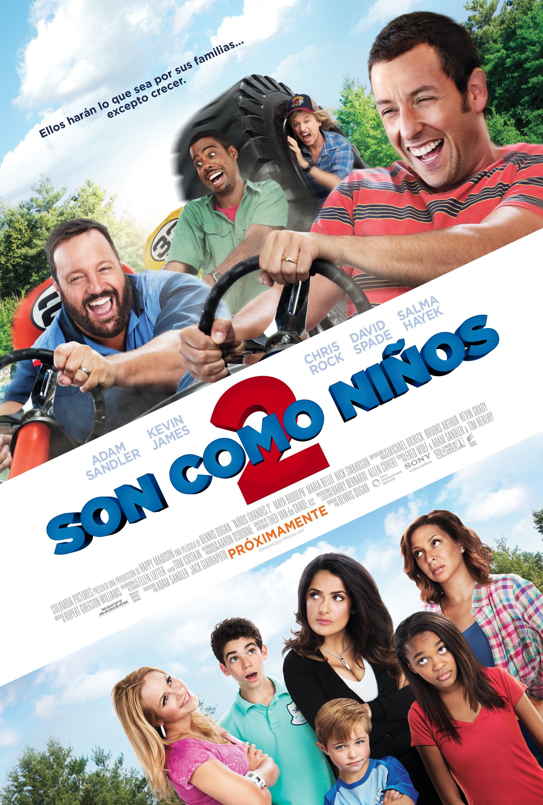
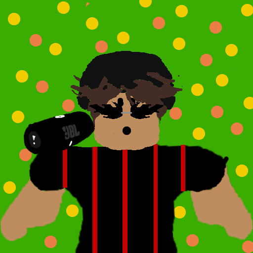

Una raza de perro muy bonita

Golden retriver
Yo tenía un golden pero murio en el año 2017 D=
Los golden son unos perros perfectos para una familia, no son muy agresivos pero no es muy bueno como perro guardian.

Labrador
Los Labradores son muy activos.
Ellos son unos perros que necesitan mucha actividad y tienen que dormir bien, tambien tienen que estar bien entrenados para que no sean muy violentos.
Reseñas de películas
The Batman

La película estaba muy emocionante.
La pelicula al inicio me desepciono porque no salia mucho Batman pero despues se puso mas emocionante. Los perosonajes estaban raros y totalmente no fuern tan emocionantes como el joker, el es uno de los mejores villanos de Batman en mi opinion.
Son como niños

Es una pelicula muy divertida
Esta es la pelicula que mas he visto con mi familia, esta muy divertida y tal ves no la rcomiendo para que niños muy chiquitos la vean, ya que puede tener unas cosas raras para ellos. Pero fuera de eso es muy buena pelicula.
Lista de musica

